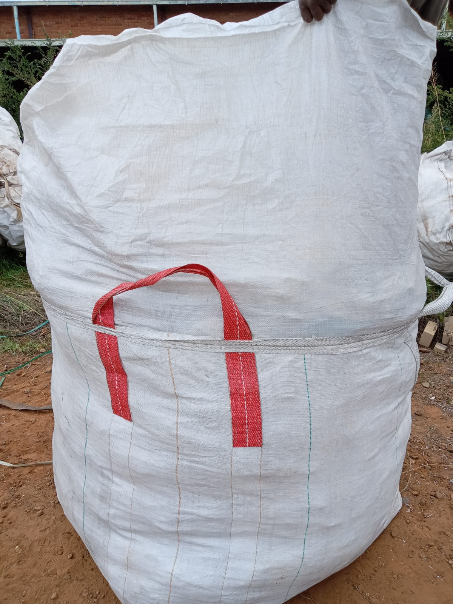

Chile Canvas & Tents
About Us
Contacts
About Chile Canvas and Tents
Chile Canvas and Tents is a premier provider of high-quality tents, canvas, hessian sacks, and mobile cynidation tanks, catering to
diverse needs across Mbare Village and beyond. With over a decade of experience, we have established ourselves as a trusted name in the
industry, delivering exceptional products and services to our valued customers.

At Chile Canvas and Tents, we understand the importance of reliability and durability in every product we offer. Whether you're in need of
sturdy tents for outdoor adventures, durable canvas for various applications, or hessian sacks for agricultural or industrial use, we
have you covered with products built to withstand the rigors of everyday use.
Additionally, our expertise extends to the construction of mobile cynidation tanks, providing efficient and effective solutions for gold
processing and mining operations. Our tanks are designed and constructed to meet the highest standards, ensuring optimal performance
and durability even in the most demanding environments.
What sets us apart is our commitment to excellence in both product quality and customer service. We strive to exceed expectations by
offering personalized assistance, expert advice, and timely support to ensure your complete satisfaction with every purchase.
Whether you're a seasoned adventurer, a farmer, or a mining professional, Chile Canvas and Tents is your reliable partner for all your
canvas, tent, sack, and mobile cynidation tank needs. Experience the difference with Chile Canvas and Tents – where quality meets
reliability.
Tents
Bukkie Cover
Plastic Drums
Pool Net